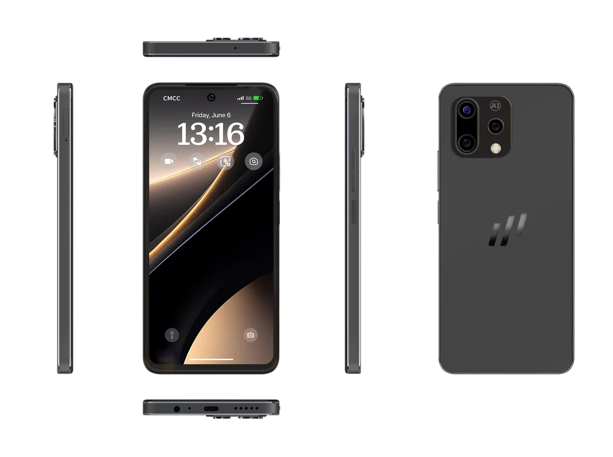
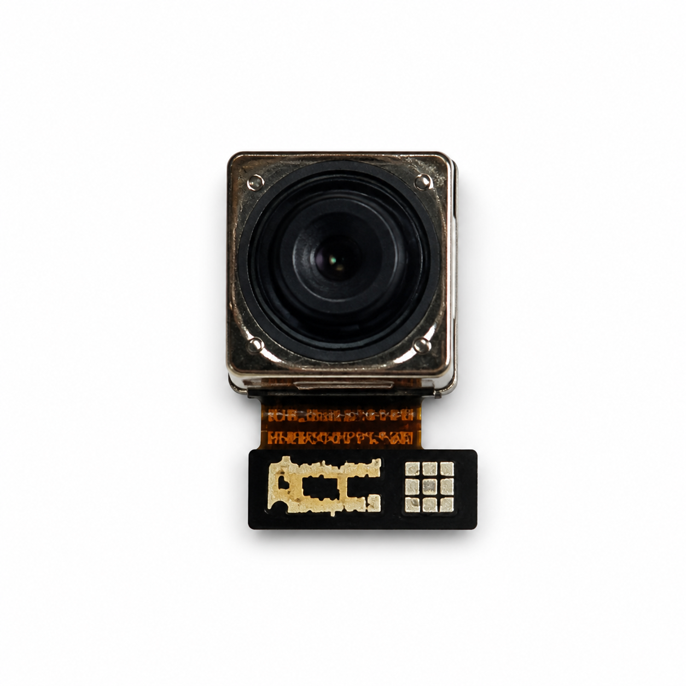
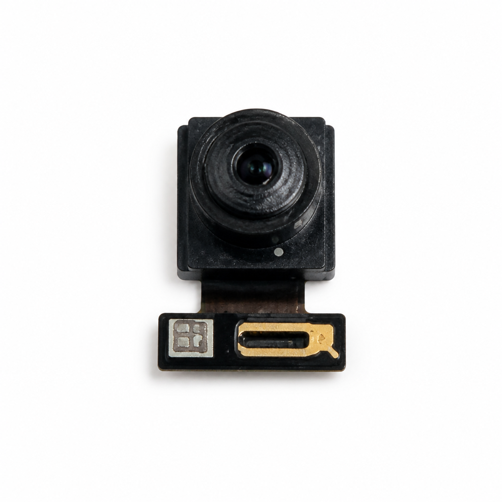
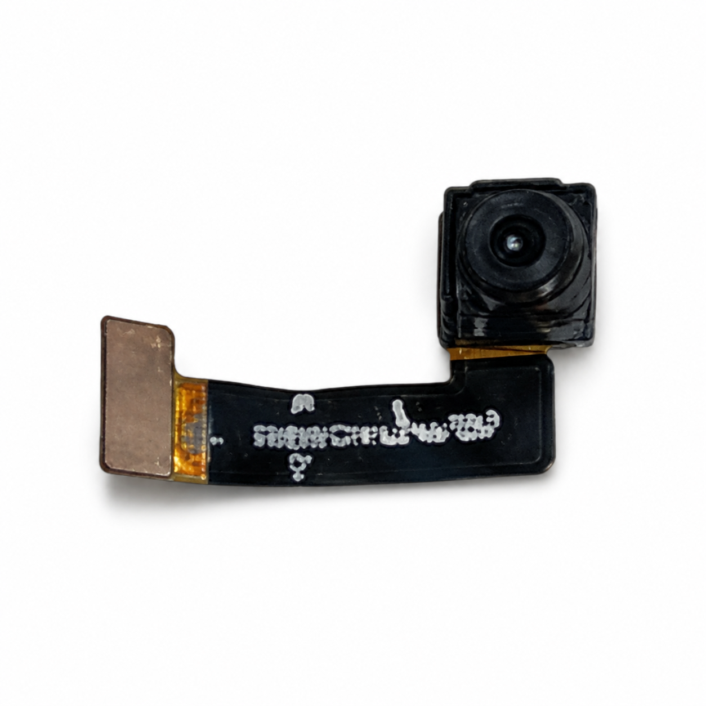
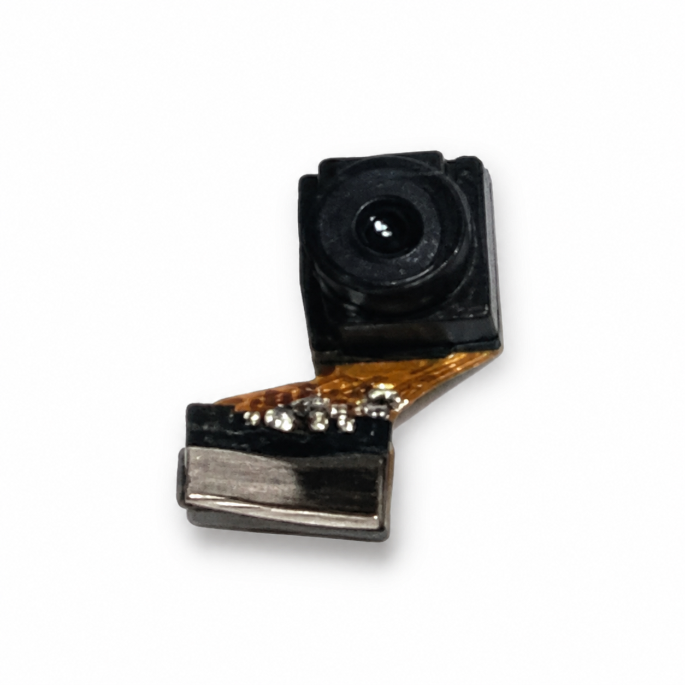

MAG1 · COMPLETE TECH SPECS
MAG1，
完整技術規格。
先看型號、硬件與網絡，再沿證據鏈查看工程資料、合規文件和實機驗證。沒有藏在第三層頁面的關鍵參數。
- DISPLAY
- 6.78″ · 120Hz
- COMPUTE
- T9100 · 10 TOPS INT8
- MEMORY
- 最高 12GB + 512GB
- NETWORK
- WW / EEA · 5G SA / NSA

AT A GLANCE
先看決定體驗的數字。
DISPLAY · PERFORMANCE · BODY
看得清，跑得久，算得動。
顯示器
- 尺寸與面板
- 6.78 吋 IPS TFT LCD
- 解析度
- 1080 × 2388 · 約 387 PPI
- 整機更新率
- 60Hz / 90Hz / 120Hz
- 面板亮度
- 800 nits 典型值 · 670 nits 最低值
- 面板對比度
- 1500:1 典型值 · 1000:1 最低值
- 面板色域
- NTSC 83% 典型值 · 78% 最低值
- 觸控採樣率
- 180Hz
- 面板廠商
- BOE
- 面板料號
- BS068MYQ-L10 · DQ00 / DQ01 / DQ02 / DQ03 / 6Q00 / 6Q01 / 6Q02 / 6Q03
- 影像增強
- SDR 至 HDR 顯示增強 · 弱 / 中 / 強
- HDR 支援
- HDR10 / HDR10+
處理與儲存
- SoC
- UNISOC T9100 5G · 八核心 · 最高 2.704GHz
- GPU
- Arm Mali-G57 · OpenGL ES 3.2
- NPU
- IMG AX3596 · 1.2GHz · 10 TOPS INT8
- 配置
- 8GB + 256GB / 12GB + 512GB
- 儲存規格
- UFS 3.1
機身
- 產品名稱
- MAG1
- 型號
- MA1
- 品牌 / 商標
- MaQ
- 顏色
- 白色 / 黑色
- 重量
- 約 200g
- 防護
- IP52
- 屏幕蓋板
- Corning Gorilla Glass 5 · 0.7mm
- 背蓋玻璃
- Corning Gorilla Glass 3
AI IMAGING SYSTEM
讓每一個瞬間，
都清晰出彩。
5000 萬像素 Samsung ISOCELL JN1 主攝負責高解析採集；UNISOC T9100 的 ISP 與端側運算鏈路負責 HDR、暗光、色彩與電子防震。MAG1 把影像硬件與本地計算放進同一條處理路徑。
Capture.
Process.
Compute.




後置相機
- 主攝
- 50MP Samsung ISOCELL JN1 / S5KJN1SQ03
- 主攝光圈
- ƒ/1.8 · 自動對焦
- 感光元件
- 1/2.76 吋 · 0.64µm · Tetra-cell
- 微距
- 2MP GalaxyCore GC02M1-C24YC
- 景深
- 2MP GalaxyCore GC02M1-C24YC
前置相機
- 自拍相機
- 16MP GalaxyCore GC16B3C
- 光圈與對焦
- ƒ/1.8 · 固定對焦
- 感光元件
- 1/3.1 吋 · 1.0µm · BSI
- 影片
- 最高 FHD 1080p · 30fps
影片與穩定
- 後置影片
- 最高 UHD 4K · 30fps
- HDR 影片
- 支援 · 已完成實機驗證
- 電子防震
- EIS · 可與 4K30 HDR 同時啟用
- 光學防震
- 不支援 OIS
- 慢動作
- 目前相機介面未提供，不列為公開功能
VERIFIED BOUNDARY相機 HAL 的能力值不等同於最終相機介面功能。本頁只公開已由實機介面與拍攝結果確認的模式。
POWER · CONNECTIVITY
電力、連接與感測。
電池與充電
- 電池
- 5000mAh
- 有線充電
- 最高 33W · USB Power Delivery
- 無線充電
- 最高 15W
- 反向供電
- USB-C 有線反向充電
無線與定位
- Wi-Fi
- Wi-Fi 5 · 802.11 a/b/g/n/ac · 2.4 / 5GHz
- Wi-Fi 射頻
- 80MHz · 256QAM · 1 × 1 SISO
- Bluetooth
- Bluetooth 5.0 · BR / EDR / BLE
- NFC
- 13.56MHz · NFC / WPT 共用天線
- 定位
- GPS · BeiDou · Galileo
連接埠與感測器
- USB
- USB-C · USB 2.0
- 耳機
- 3.5mm 耳機孔
- SIM
- 雙 Nano-SIM · DSDS · 不支援 eSIM
- 動態感測
- ICM42607 加速度計 + 陀螺儀
- 其他感測
- 磁力計 · 光線 / 距離 · 氣壓計 · 指紋
REGIONAL BUILDS · MOBILE NETWORK
WW 與 EEA，
不是同一個韌體標籤。
產品名稱相同，但 Google 核准基線、適用市場與合規測試版本各有角色。以下版本號不可互相替代；OTA 版本亦可能依地區、批次與營運商更新。
WW
- 產品代號
- MAG1
- GMS 核准基線
- MAG1WW34F
- 實機工程驗證版本
- MAG1WW53
- CE 評估軟件
- MAG1WW58-2
EEA
- 產品代號
- MAG1_EEA
- GMS 核准基線
- MAG1EEA08
- 作業系統
- Android 15
- 服務框架
- Google Mobile Services
最高 4 × 4
下行 MIMO
這是蜂窩網絡的多天線下行接收能力，不是 Wi-Fi 規格。
LTEB2 / B25 / B38 / B41 / B42 / B66
5G NRn38 / n41 / n66 / n77 / n78 / n79
蜂窩網絡支援最高 4 × 4 下行 MIMO：LTE B2 / B25 / B38 / B41 / B42 / B66；5G NR n38 / n41 / n66 / n77 / n78 / n79。實際可用性取決於地區、營運商網絡配置及軟件版本。
北美公開測試頻段
- GSM
- 850 / 1900
- WCDMA
- B2 / B4 / B5
- LTE
- B2 / B5 / B7 / B12 / B13 / B17 / B25 / B26 / B38 / B41 / B42 / B66 / B71
- 5G NR
- n5 / n7 / n38 / n41 / n66 / n71 / n77 / n78
歐洲型式檢驗頻段
- GSM
- 900 / 1800
- UMTS
- B1 / B5 / B8
- LTE
- B1 / B3 / B5 / B7 / B8 / B20 / B28 / B38 / B40 / B41 / B42
- 5G NR
- n1 / n3 / n5 / n7 / n8 / n20 / n28 / n38 / n40 / n41 / n77 / n78 / n79
5G SA / NSAEN-DC蜂窩下行最高 4 × 4 MIMO最高 100MHz256QAMHPUESUB-6 ONLY
實際頻段、5G 模式、漫遊與服務可用性取決於地區、營運商、SIM、軟件版本與當地法規。MAG1 不支援 mmWave。
SECURITY · COMPLIANCE
規格表的最後一列，
是可查驗性。
硬件安全
- 可信執行環境
- UTEE · Common Criteria EAL2+
- 安全元件
- Embedded SE · Common Criteria EAL6+
- Android 整合
- OMAPI eSE1 · ARA-M 存取控制
- 金鑰服務
- Hardware-backed KeyMint / Keystore
- 證明與供應
- App Attestation Key · Remote Key Provisioning
設備身份與合規
- FCC ID
- 2BVCPGC603606
- GSMA TAC
- 01681300
- CE 證書
- SN26C0174 · Revision A
- Notified Body
- Sporton International (USA) Inc. · 2907
- GMS Final Approval · Widevine L1
頁面資料依產品工程文件、Google GMS 資料、FCC 公開測試報告、CE 型式檢驗證書及實機工程驗證整理。規格可能因地區、批次與最終出貨軟件調整；以實際銷售版本及當地文件為準。